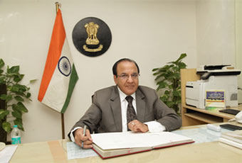

Chief Election Commissioner
|
Shri A K JotiShri A K Joti took over as Chief Election Commissioner of India on 06th July, 2017. Earlier Shri. Joti served as Election Commissioner since 13th May 2015. He has served the Nation as a longtime Civil Servant of Indian Administrative Service (1975 Batch). He brings with him a rich experience of Public Administration of 42 years.
During 1981-85, he worked as District Magistrate and Collector for about five years in the Three Districts of Surendranagar, Panchmahal and Kheda of Gujarat State. The Godhra town in Panchmahal District had the dubious distinction of having Communal Riots frequently and as a result of which Curfew had to be imposed in Godhra town very frequently during 1981-82. Shri. Joti took charge of District Magistrate of Panchmahal District in June, 1982. During his Two Years tenure upto July, 1984, Curfew was never imposed in Godhra Town. The strategy followed was to establish Communal Harmony by synergizing with all the Stakeholders of different Religions in the Godhra Town and celebrating Festivals of all Religions jointly with appropriate Police Bandobast. The strategy adopted worked well and peace was restored in Godhra Town on a Sustainable basis.
As District Magistrate and Returning Officer for Kheda District he conducted Free and Fair Elections for the 8th Lok Sabha Elections in December, 1984. There were Two Parliamentary Constituencies in Kheda District (Kheda and Anand). In the month of February/March, 1985, the 6th Gujarat State Assembly Elections were held peacefully for the 17 Assembly Constituencies of Kheda District. He was the District Election Officer (DEO) during this period. He held the post of Secretary Industries, Secretary Revenue and Secretary Water Supply in the State of Gujarat. He also worked as Chairman, Kandla Port Trust under the Ministry of Shipping, Govt. of India on deputation basis during October 1999 to October, 2004. He was Principal Secretary Finance Department for more than Three Years. He worked as Additional Chief Secretary, General Administration Department and Managing Director, Sardar Sarovar Narmada Nigam Limited (SSNNL). As Principal Secretary in Finance Department, e-Procurement was introduced in the State of Gujarat w.e.f. December, 2006. Despite the resistance by some Departments for its implementation in the beginning, the e-Procurement scheme was rolled out in all the State Offices, District Offices and Taluka/Tehsil Offices. All the Tenders and Procurements of Goods and Services with a value of more than Rs.10 lakhs had to be undertaken by e-Procurement. After gaining experience w.e.f. August, 2010, the e-Procurement was made applicable for finalizing the Tenders of value more than Five Lakhs throughout the State. In the State of Gujarat, from December, 2006 to April, 2015, 1.66 lakhs e-Tenders were issued with a value of Rs.2.41 lakh crores. The implementation of e-Procurement throughout the State has increased the Transparency in finalization of the Tenders and Procurement of Goods and Services by the Govt. Authorities at the State, District and Taluka/Tehsil level.
Gujarat State has a distinction that the Bureaucracy works as Team Members of ‘The Team Gujarat’. As a member of Team Gujarat, during 2004 to 2009, he played Pro-active role in effectively implementing various Schemes of the State Govt. in the State of Gujarat while working as Secretary in different Govt. Departments.
He became Chief Secretary and Team Leader of ‘Team Gujarat’ for a period of Three Years (from January, 2010 to January, 2013).
Govt. of Gujarat has a Vision and Policy for leveraging ICT to improve service delivery, empowering citizens, increasing transparency of Governance and eliminating the scope of malpractices from the traditional systems of implementing Govt. Schemes at State, District and Taluka/Tehsil level.
|